Day 1：抵達與北上
📅 3月25日（週三）・ 出發囉！
🚗 租車資訊
前往桃園中正機場第二航廈，08:00前須抵達報到。
機場接送資訊待補，請提前確認交通方式。
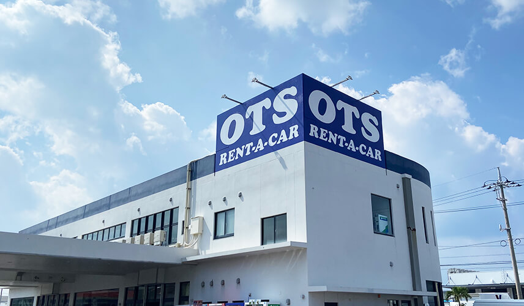
前往OTS臨空豐崎營業所辦理取車手續，安裝安全座椅。午餐建議在便利商店買飯糰在車上簡單吃，爭取時間北上。
駕駛需適應日本右駕，副駕請幫忙看導航。
走沖繩自動車道，一路往北前往名護，車程約1小時。
駕駛需適應右駕，副駕幫忙看導航。
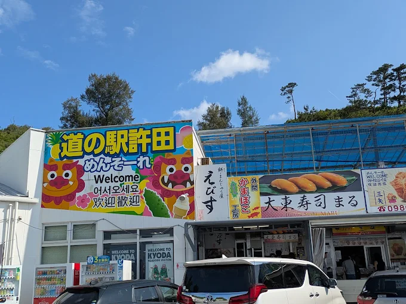
沖繩北部著名休息站，是購買美麗海水族館優惠票最便宜的地方！可購買炸天婦羅、黑糖麵包當點心。
美麗海水族館優惠票只收現金，務必在此停留購買！
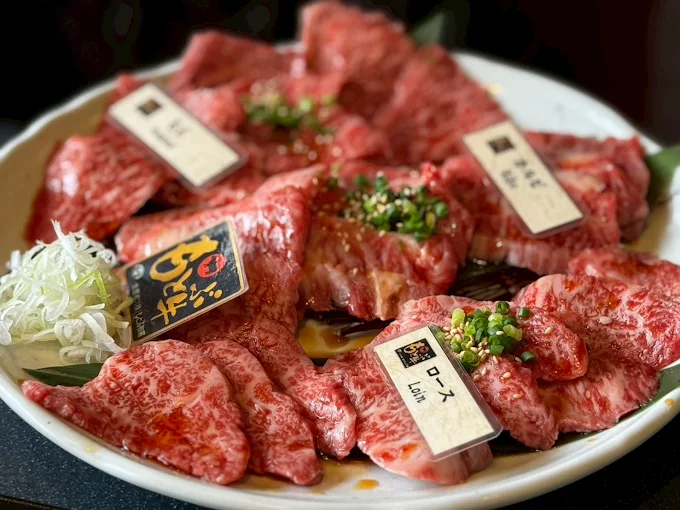
享用高品質沖繩和牛燒肉，本部農場直供的新鮮牛肉，肉質鮮嫩香甜。
已訂位 3/25 19:00・8位，座位只保留10分鐘，請準時到達！
Day 2：北部海洋經典
📅 3月26日（週四）・ 美麗海大冒險！
享用飯店早餐，為一天的行程補充能量！
沿著海岸線開車前往，早上車流較順，車程約40-50分鐘。
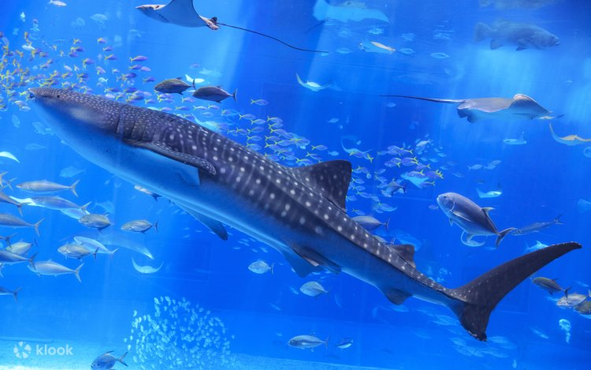
世界頂級水族館！「黑潮之海」巨型水槽擁有鯨鯊與魟魚悠游其中，震撼人心。
🐬 戶外海豚劇場 (Okichan) 開始時間：10:30 / 11:30 / 13:00 / 15:00 / 17:00
🐬 海豚餵食：10:00-10:30 / 11:00-11:30
🐢 海龜餵食：11:00-12:00
開車過跨海大橋，車程約30-40分鐘。
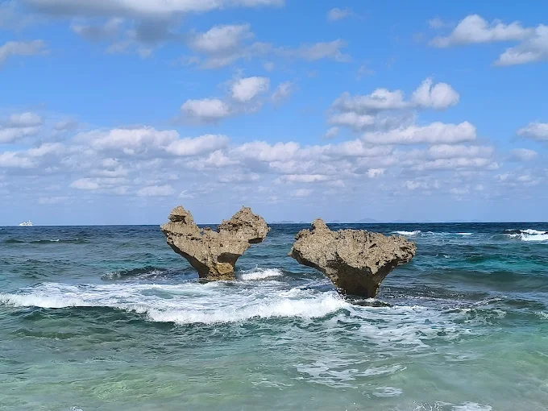
古宇利島最著名的打卡景點！兩塊天然形成的心形岩石矗立在沙灘上，夕陽時分特別浪漫。
附近停車場收費約100-200日圓；沙灘小徑碎石較多，建議穿舒適鞋子。
車程約40~50分鐘。
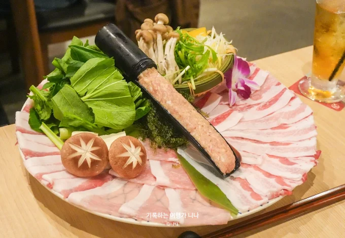
名護高人氣的溫馨餐廳，主打精緻高級肉品。特色料理有阿古豬涮涮鍋與和牛壽喜燒。
已訂位 18:15，請準時到達！
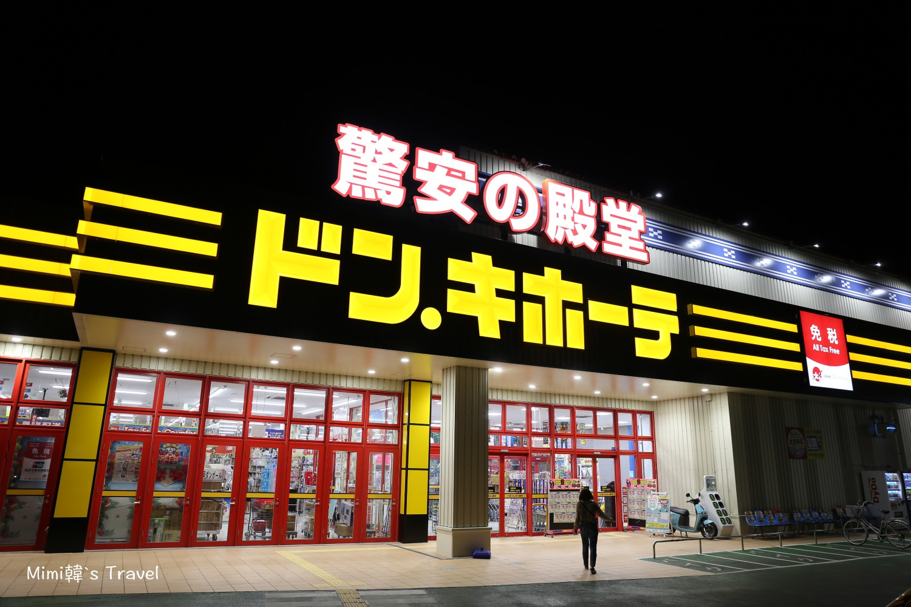
可回飯店休息，或到名護市區逛逛。餐廳附近有唐吉軻德，可採購特色伴手禮！
Day 3：北中南全制霸
📅 3月27日（週五）・ 精彩一日遊！
享用飯店早餐，為充實的一天做好準備！
行李全部上車，準時出發！！
檢查隨身物品有無遺漏，尤其是護照！
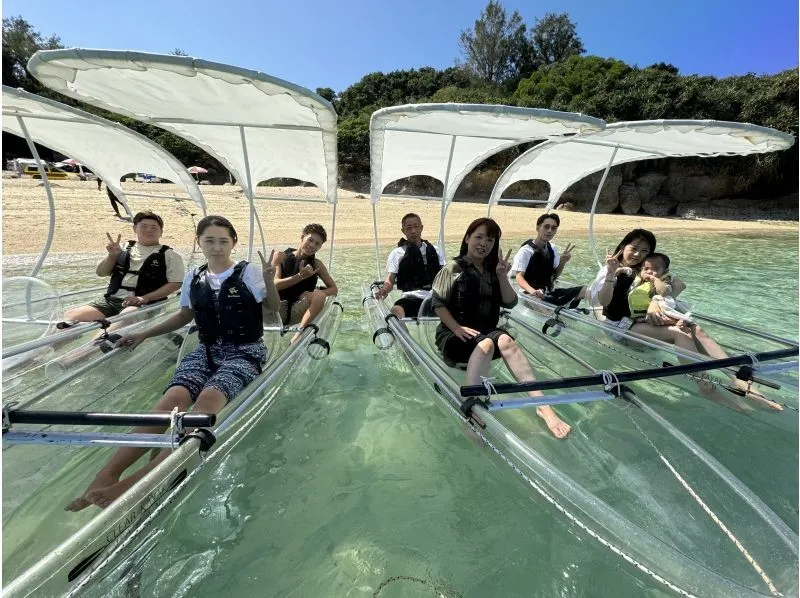
搭乘玻璃底船觀賞海底世界，可看魚、餵魚，體驗時間30分鐘。
已預約09:30場次，需提早20分鐘抵達！若風浪大停駛，備案改去名護鳳梨園。
從名護鳳梨園前往約20分鐘，從瀨底島前往約30分鐘。
前往琉球體驗王國，車程約30分鐘。
車程約40分鐘。
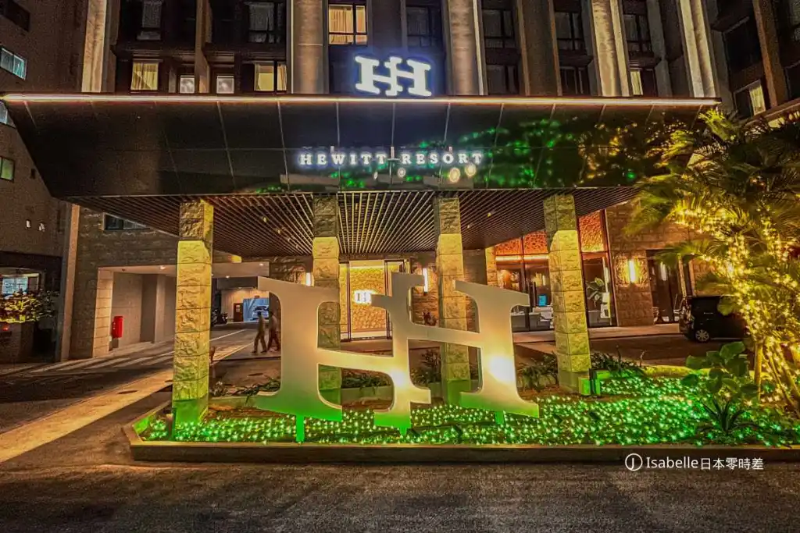
那霸市區的渡假飯店，鄰近著名的國際通，步行即可到達。
停車費每晚約1,650日圓。8人座車請先在大門口讓長輩下車卸行李，再由駕駛去停車。
Day 4：市場海鮮與悠閒南部
📅 3月28日（週六）・ 美食購物日！
享用飯店早餐，為充實的一天做好準備！
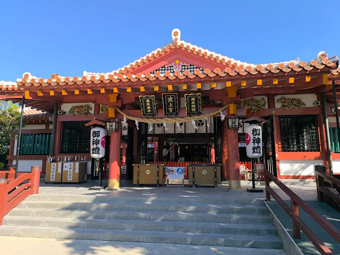
那霸市內著名的懸崖神社，是沖繩總鎮守的神社，建於海岸懸崖之上。前來參拜祈福，感受沖繩的傳統信仰文化。
車子可停若狹海浜公園駐車場（Mapcode: 33 186 120*25）。
返回那霸休伊特渡假飯店停車，再步行或搭計程車前往牧志市場。
因市場附近車位難找，停在飯店附近再走路/計程車前往（走路約15分鐘可達）。
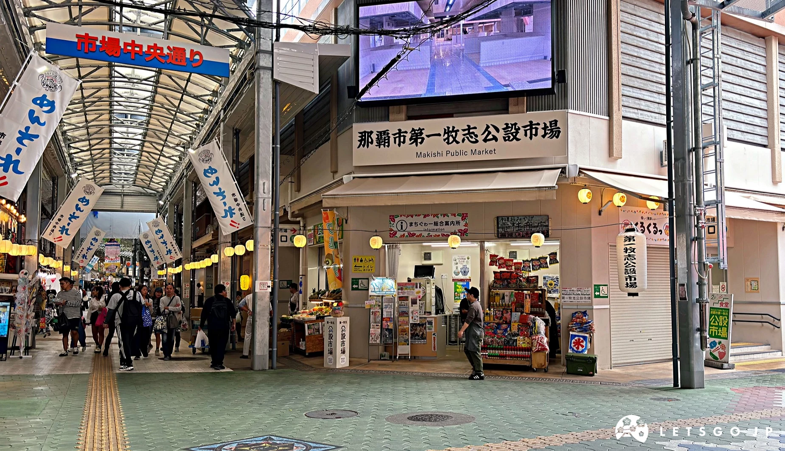
那霸最著名的海鮮市場！1樓挑選新鮮海鮮、龍蝦、帝王蟹，再拿到2樓請店家代為烹調。
週六人多！建議避開12:30尖峰時段。車停飯店，搭計程車前往最輕鬆。
回飯店開車，前往美國村，車程約40分鐘。
返回飯店休息，車程約40分鐘。
Day 5：最後補貨與返家
📅 3月29日（週日）・ 依依不捨回家了～
享用最後一次早餐，辦理退房手續。
再次確認護照在身上！
在Outlet 1F或2F的餐廳享用最後一頓沖繩午餐，選擇多樣。
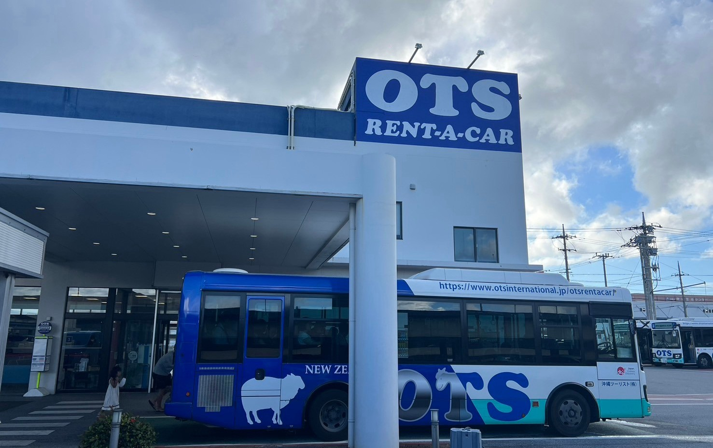
前往OTS臨空豐崎營業所還車，OTS旁邊就有加油站，方便加滿油後直接還車。
請保留加油收據！還車時需出示。
還車後搭OTS接駁巴士前往那霸機場，辦理登機手續。
絕對不能遲到！14:55前須抵達那霸機場，日本國際線排隊很長！
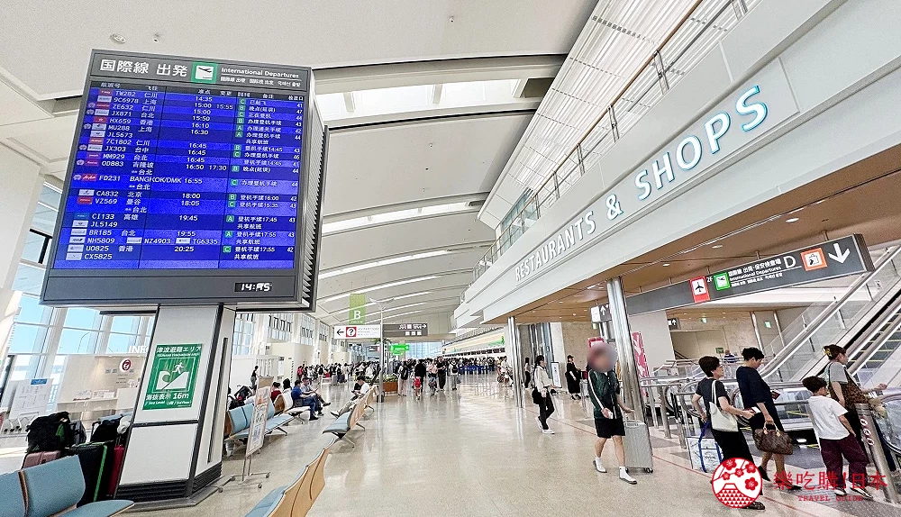
在機場逛免稅店、買伴手禮！AirAsia FD231，16:55起飛，返回台灣！
班機 FD231 16:55 起飛，請預留充足時間過安檢！